6 Mornings
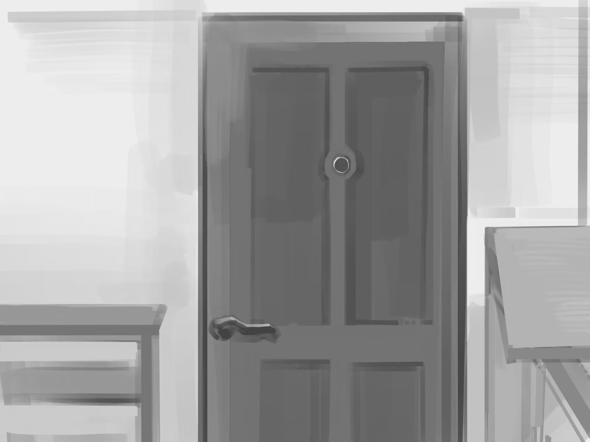
项目介绍Introduction
《6 Mornings》是一款以失智症老人为主题的点击叙事游戏。玩家需要连续六天完成一套看似固定的晨间日常，但每一天，房间、物品、人物和行为结果都会发生变化。
这个项目来自我此前参与同类主题戏剧创作时接触到的 OiBokkeShi 戏剧工作坊。它强调通过表演“进入老人所看到的世界”。因此，我想进一步探索：如果玩家不是从外部观察失智症，而是从老人的视角经历记忆与现实信息之间不断出现的错位，会发生什么？
6 Mornings is a click-based narrative game about an elderly person living with dementia. The player repeats what appears to be the same morning routine for six days, while the room, objects, people and consequences of familiar actions gradually change.
The project grew from my earlier theatre work on a similar theme, where I encountered the OiBokkeShi drama workshop and its idea of “stepping into the world the elders see.” I wanted to explore that idea from inside the player's perspective, letting memory and external information begin to contradict one another.
但现实中，从第一天到第六天，许多年已经过去。
In reality, many years have passed between the first and the sixth.
固定的日常A Fixed Routine
玩家每天都沿着同样的行为顺序行动：起床、洗漱、吃早餐、整理背包、翻动日历。通过重复，玩家首先建立对老人生活习惯、家人与空间的熟悉感。
Each morning follows the same sequence: wake up, brush teeth, have breakfast, prepare the backpack and turn the calendar page. Repetition first allows the player to become familiar with the elderly character's belongings, family and routine.
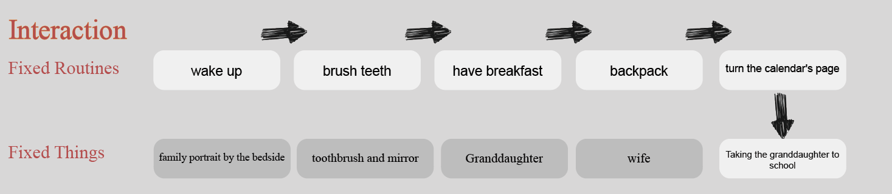
三个变化阶段Three Stages of Change
变化不是从第一天就剧烈发生，而是逐渐破坏玩家刚刚建立起来的熟悉感。
The changes do not begin dramatically. Instead, they slowly destabilize the familiarity the player has just learned to trust.
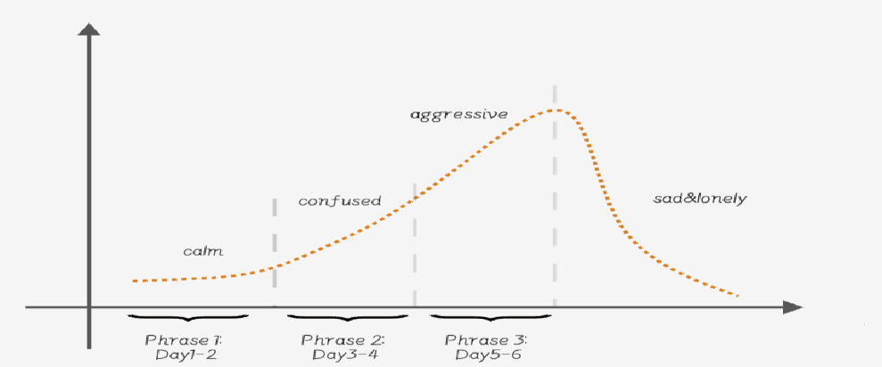
熟悉事物的变化Changes in Familiar Things
我用同一类物件在三个阶段中的变化，让玩家通过视觉而不是解释性文字感受到时间、家庭和记忆正在滑动。
I used the same familiar objects across three stages so that changes in time, family and memory could be felt visually rather than explained directly.
床边的家庭照片Family portrait by the bed
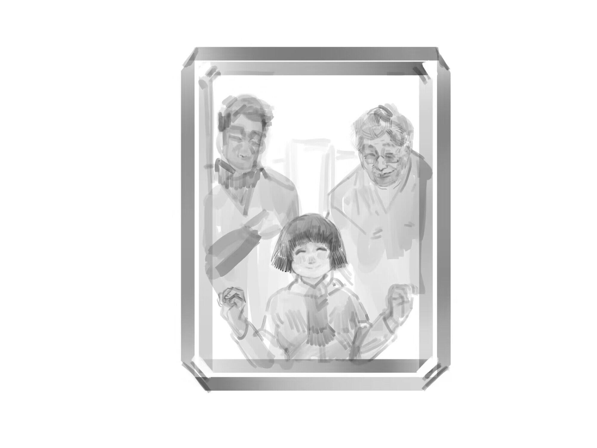
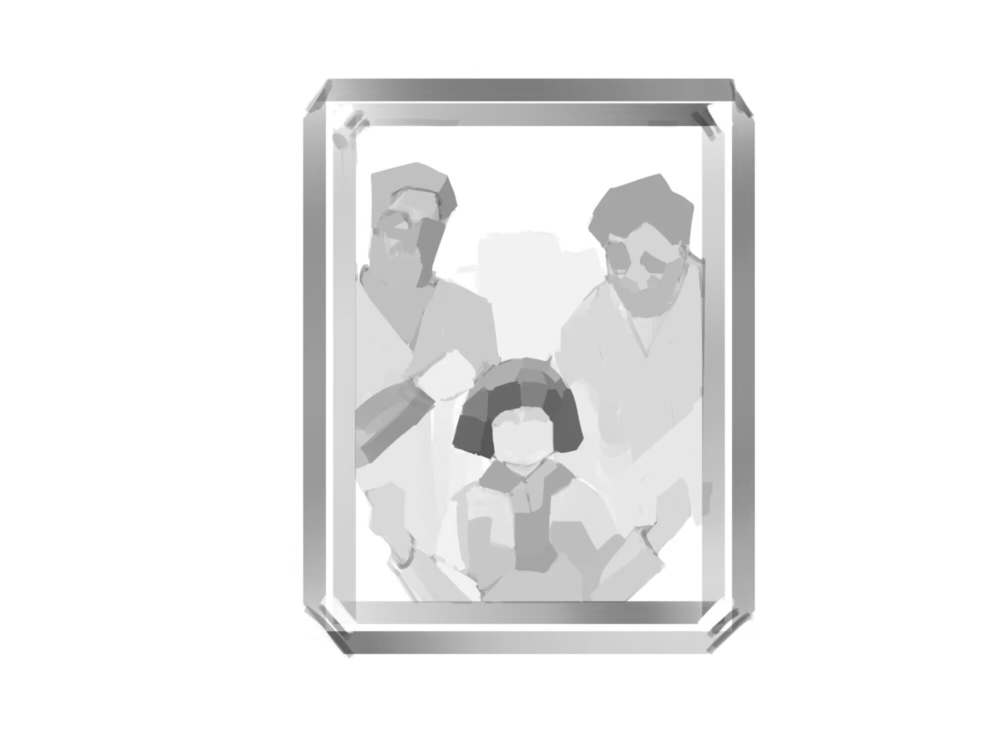
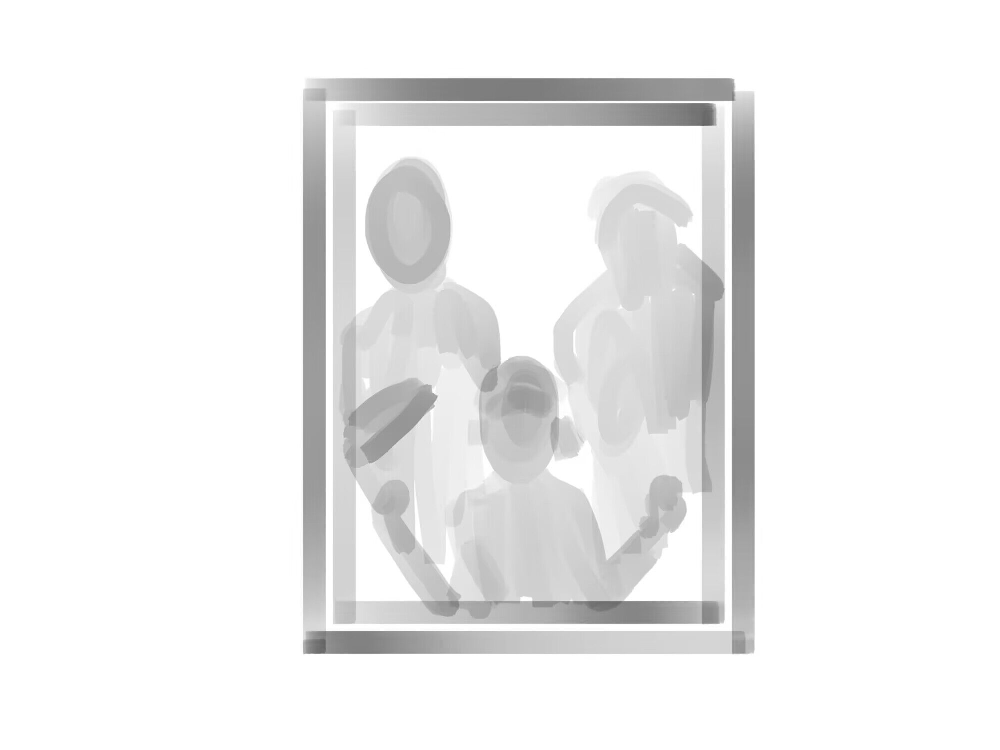
镜中的人物The person in the mirror
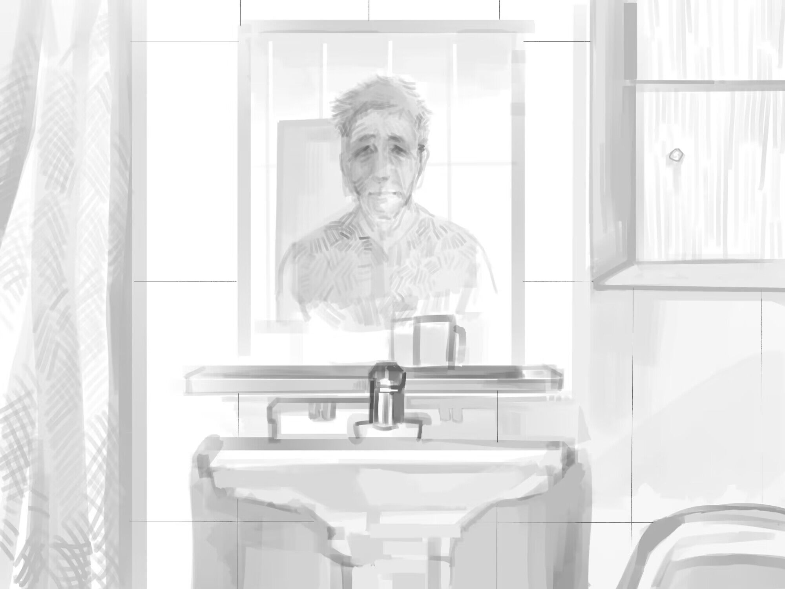
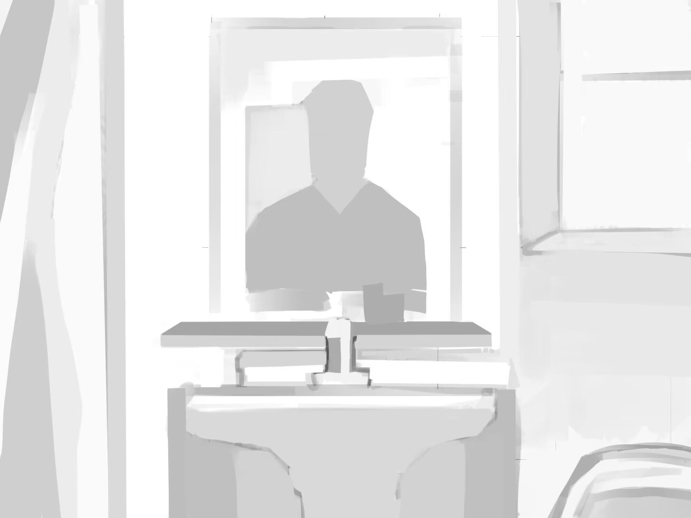
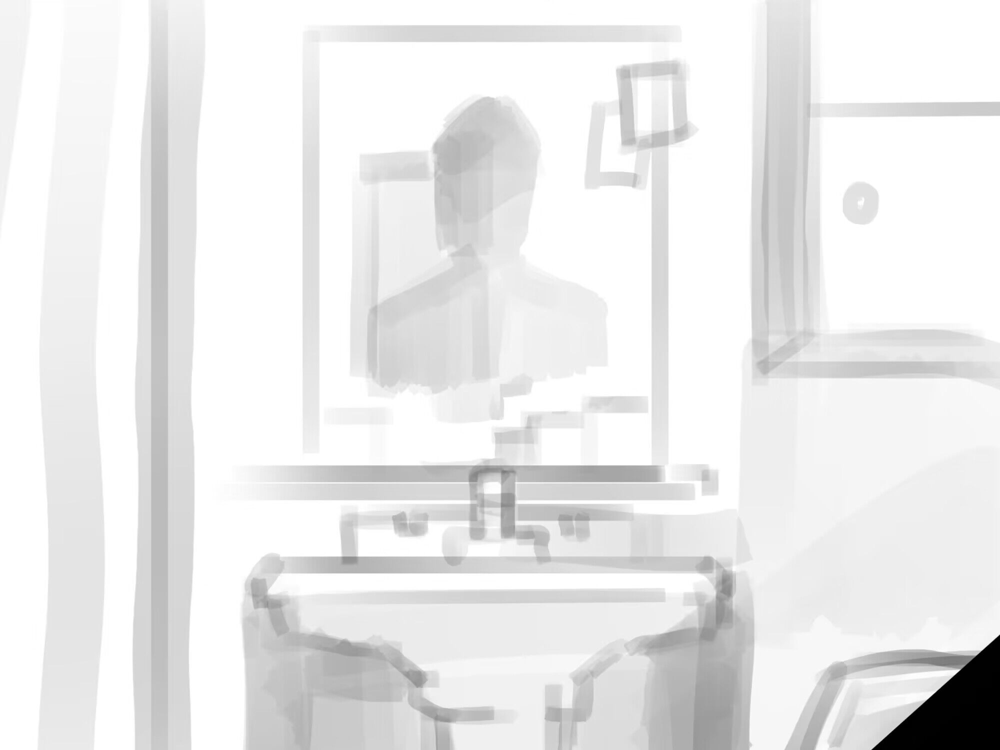
房间The room
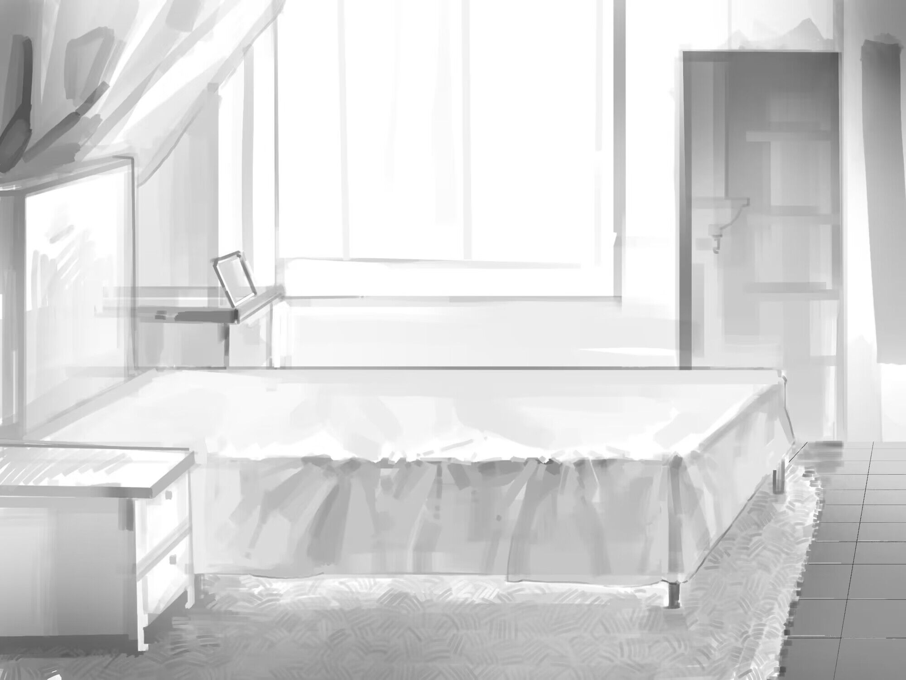
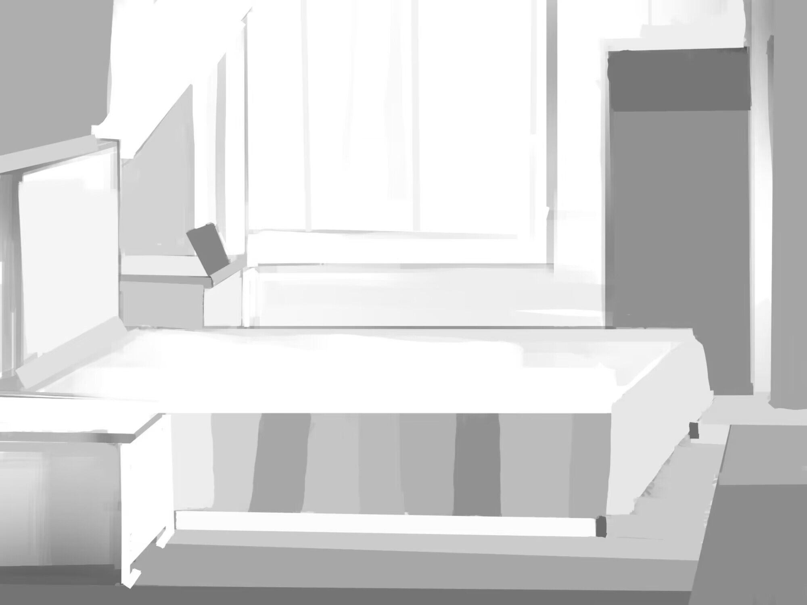
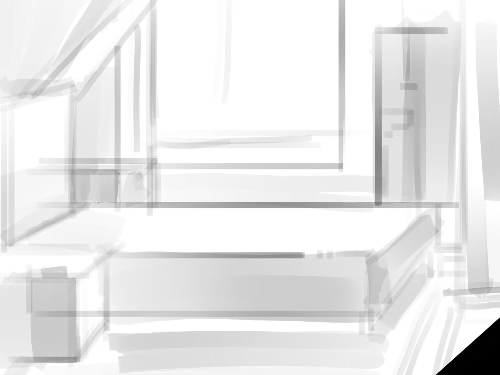
同一个动作、同一个房间、同一个早晨。
失去的，是把它们连成一条记忆的能力。
The same action, the same room, the same morning.
What is lost is the ability to connect them into a single thread of memory.